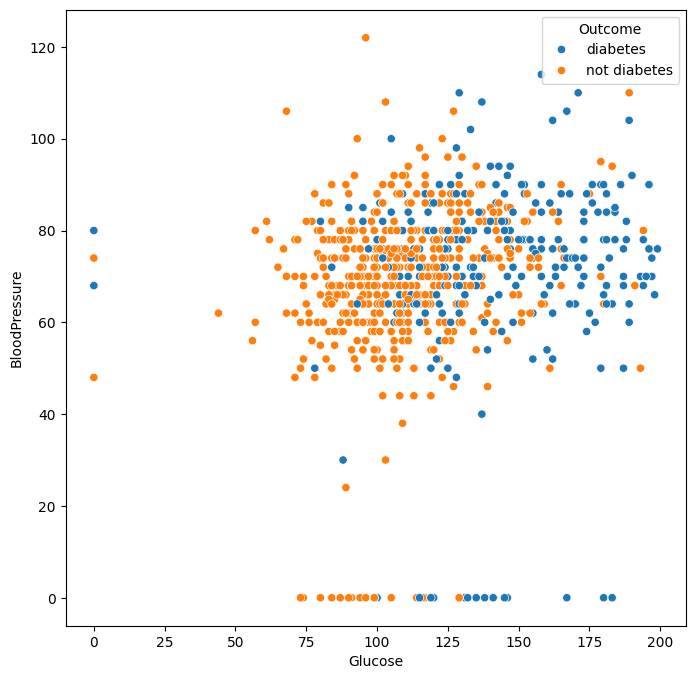
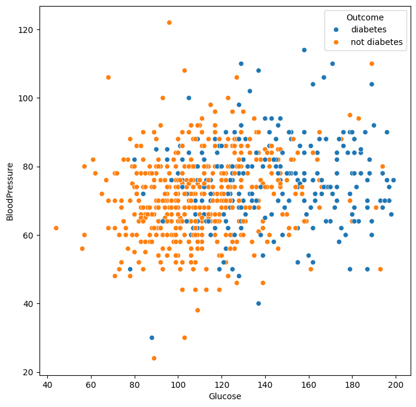
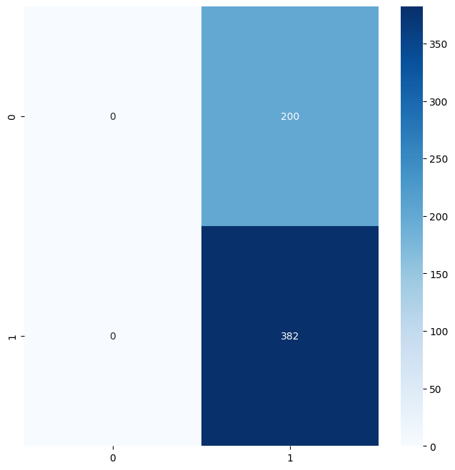
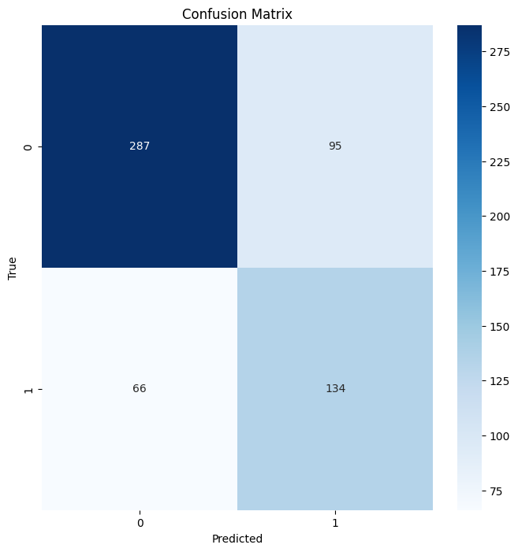
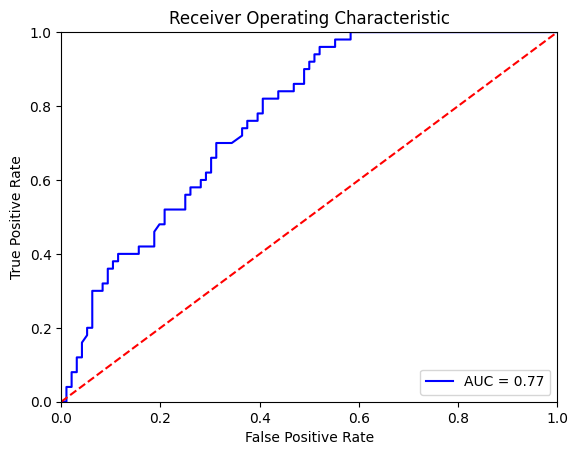
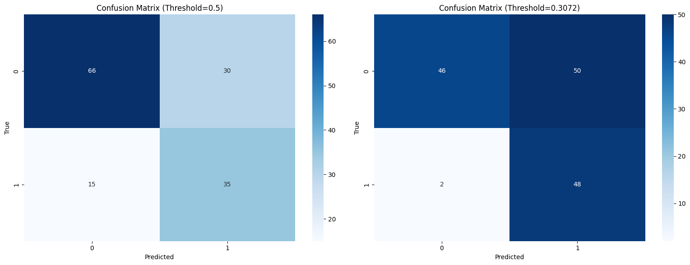

import pandas as pd
import numpy as npLogistic Regression Workflow
data = pd.read_csv('diabetes.csv')
data| Pregnancies | Glucose | BloodPressure | SkinThickness | Insulin | BMI | DiabetesPedigreeFunction | Age | Outcome | |
|---|---|---|---|---|---|---|---|---|---|
| 0 | 6 | 148 | 72 | 35 | 0 | 33.6 | 0.627 | 50 | 1 |
| 1 | 1 | 85 | 66 | 29 | 0 | 26.6 | 0.351 | 31 | 0 |
| 2 | 8 | 183 | 64 | 0 | 0 | 23.3 | 0.672 | 32 | 1 |
| 3 | 1 | 89 | 66 | 23 | 94 | 28.1 | 0.167 | 21 | 0 |
| 4 | 0 | 137 | 40 | 35 | 168 | 43.1 | 2.288 | 33 | 1 |
| ... | ... | ... | ... | ... | ... | ... | ... | ... | ... |
| 763 | 10 | 101 | 76 | 48 | 180 | 32.9 | 0.171 | 63 | 0 |
| 764 | 2 | 122 | 70 | 27 | 0 | 36.8 | 0.340 | 27 | 0 |
| 765 | 5 | 121 | 72 | 23 | 112 | 26.2 | 0.245 | 30 | 0 |
| 766 | 1 | 126 | 60 | 0 | 0 | 30.1 | 0.349 | 47 | 1 |
| 767 | 1 | 93 | 70 | 31 | 0 | 30.4 | 0.315 | 23 | 0 |
768 rows × 9 columns
# Load Data
data = pd.read_csv("diabetes.csv")
data = data[["Glucose", "BloodPressure", "Outcome"]]
data["Outcome"] = data["Outcome"].apply(lambda x: "diabetes" if x==1 else "not diabetes")
data.head()| Glucose | BloodPressure | Outcome | |
|---|---|---|---|
| 0 | 148 | 72 | diabetes |
| 1 | 85 | 66 | not diabetes |
| 2 | 183 | 64 | diabetes |
| 3 | 89 | 66 | not diabetes |
| 4 | 137 | 40 | diabetes |
import matplotlib.pyplot as plt
import seaborn as sns
# Visualkan Data
fig, ax = plt.subplots(nrows=1, ncols=1, figsize=(8, 8))
sns.scatterplot(x = "Glucose",
y = "BloodPressure",
hue = "Outcome",
data = data,
ax = ax)
plt.show()
# Hapus data glucose == 0 & bloodpressure = 0
condition_1 = data["Glucose"] > 0
condition_2 = data["BloodPressure"] > 0
data = data[condition_1 & condition_2]# Visualkan Data
fig, ax = plt.subplots(nrows=1, ncols=1, figsize=(8, 8))
sns.scatterplot(x = "Glucose",
y = "BloodPressure",
hue = "Outcome",
data = data,
ax = ax)
plt.show()
data["Outcome"].value_counts(normalize = True)Outcome
not diabetes 0.656593
diabetes 0.343407
Name: proportion, dtype: float64# Buat input & output
X = data.drop(columns = "Outcome")
y = data["Outcome"]# Split train & test
from sklearn.model_selection import train_test_split
X_train, X_test, y_train, y_test = train_test_split(X,
y,
test_size = 0.2,
stratify = y, # stratify sampling karena y imbalance
random_state = 123)y_train.value_counts(), y_train.value_counts(normalize = True), y_test.value_counts(), y_test.value_counts(normalize = True)(Outcome
not diabetes 382
diabetes 200
Name: count, dtype: int64,
Outcome
not diabetes 0.656357
diabetes 0.343643
Name: proportion, dtype: float64,
Outcome
not diabetes 96
diabetes 50
Name: count, dtype: int64,
Outcome
not diabetes 0.657534
diabetes 0.342466
Name: proportion, dtype: float64)# Baseline Model
# Dummy Classifier memprediksi dengan random (nebak) berdasarkan proporsi kelas
from sklearn.dummy import DummyClassifier
# Buat objek
dummy_clf = DummyClassifier(strategy = "most_frequent") # most_frequent = nebak kelas yang paling banyak muncul
# Lakukan fit, untuk data y_train saja
dummy_clf.fit(X = X_train,
y = y_train)DummyClassifier(strategy='most_frequent')In a Jupyter environment, please rerun this cell to show the HTML representation or trust the notebook.
On GitHub, the HTML representation is unable to render, please try loading this page with nbviewer.org.
DummyClassifier(strategy='most_frequent')
# Predict
y_pred_dummy = dummy_clf.predict(X_train)# Tampilkan confusion matrix
from sklearn.metrics import confusion_matrix
confusion_matrix(y_true = y_train,
y_pred = y_pred_dummy)array([[ 0, 200],
[ 0, 382]])# Visual confusion matrix
import seaborn as sns
import matplotlib.pyplot as plt
# Buat confusion matrix
cm = confusion_matrix(y_true = y_train,
y_pred = y_pred_dummy)
# Buat figure
fig, ax = plt.subplots(nrows=1, ncols=1, figsize=(8, 8))
sns.heatmap(cm, annot=True, fmt="d", cmap="Blues", ax=ax)
ax.set_xlabel("Predicted")
ax.set_ylabel("True")
ax.set_title("Confusion Matrix")
plt.show()
# cek yang positif itu apa
dummy_clf.classes_[1] # not diabetes, ini adalah kelas 1 (positif)'not diabetes'dummy_clf.classes_[0] # diabetes, ini adalah kelas 0 (negatif)'diabetes'# Cari score
from sklearn.metrics import accuracy_score
accuracy_score(y_true = y_train,
y_pred = y_pred_dummy)
# Sama seperti proporsi kelas terbesar0.6563573883161512# Dummy Classifier dengan strategi stratified
dummy_clf = DummyClassifier(strategy = "stratified",
random_state = 123)
# Lakukan fit, untuk data y_train saja
dummy_clf.fit(X = X_train,
y = y_train)DummyClassifier(random_state=123, strategy='stratified')In a Jupyter environment, please rerun this cell to show the HTML representation or trust the notebook.
On GitHub, the HTML representation is unable to render, please try loading this page with nbviewer.org.
DummyClassifier(random_state=123, strategy='stratified')
# predict
y_pred_dummy = dummy_clf.predict(X_train)
# Tampilkan confusion matrix
confusion_matrix(y_true = y_train,
y_pred = y_pred_dummy)array([[ 66, 134],
[128, 254]])Cara Mengubah Data Kategorikal ke Numerik - Possible value: {not diabetes, diabetes} - Strateginya: Label Encoding, ubah not diabetes -> 0, diabetes -> 1
# Convert y_train & y_test
y_train = y_train.apply(lambda x: 1 if x == "diabetes" else 0)
y_test = y_test.apply(lambda x: 1 if x == "diabetes" else 0)y_train.value_counts(normalize=True)Outcome
0 0.656357
1 0.343643
Name: proportion, dtype: float64from sklearn.preprocessing import StandardScaler
# Buat scaler
scaler = StandardScaler()
scaler.fit(X_train)
# Transform data train & test
X_train_scaled = scaler.transform(X_train)
X_test_scaled = scaler.transform(X_test)# Import library
from sklearn.linear_model import LogisticRegression
# Buat weight class
n_samples = len(y_train)
n_classes = len(y_train.value_counts())
n_samples_j = y_train.value_counts()
class_weight = n_samples / (n_classes * n_samples_j)
class_weight
# Kita kasih weight yang lebih besar untuk kelas 1Outcome
0 0.76178
1 1.45500
Name: count, dtype: float64# Buat objek
logreg = LogisticRegression(class_weight = dict(class_weight),
solver = "liblinear",
random_state = 123)# Lakukan eksperimentasi
from sklearn.model_selection import GridSearchCV
search_params = {"penalty": ["l1", "l2"],
"C": np.logspace(-5, 5, 20)}
logreg_cv = GridSearchCV(estimator = logreg,
param_grid = search_params,
cv = 5)# Lakukan Fitting Data
logreg_cv.fit(X = X_train_scaled,
y = y_train)GridSearchCV(cv=5,
estimator=LogisticRegression(class_weight={0: np.float64(0.7617801047120419),
1: np.float64(1.455)},
random_state=123,
solver='liblinear'),
param_grid={'C': array([1.00000000e-05, 3.35981829e-05, 1.12883789e-04, 3.79269019e-04,
1.27427499e-03, 4.28133240e-03, 1.43844989e-02, 4.83293024e-02,
1.62377674e-01, 5.45559478e-01, 1.83298071e+00, 6.15848211e+00,
2.06913808e+01, 6.95192796e+01, 2.33572147e+02, 7.84759970e+02,
2.63665090e+03, 8.85866790e+03, 2.97635144e+04, 1.00000000e+05]),
'penalty': ['l1', 'l2']})In a Jupyter environment, please rerun this cell to show the HTML representation or trust the notebook. On GitHub, the HTML representation is unable to render, please try loading this page with nbviewer.org.
GridSearchCV(cv=5,
estimator=LogisticRegression(class_weight={0: np.float64(0.7617801047120419),
1: np.float64(1.455)},
random_state=123,
solver='liblinear'),
param_grid={'C': array([1.00000000e-05, 3.35981829e-05, 1.12883789e-04, 3.79269019e-04,
1.27427499e-03, 4.28133240e-03, 1.43844989e-02, 4.83293024e-02,
1.62377674e-01, 5.45559478e-01, 1.83298071e+00, 6.15848211e+00,
2.06913808e+01, 6.95192796e+01, 2.33572147e+02, 7.84759970e+02,
2.63665090e+03, 8.85866790e+03, 2.97635144e+04, 1.00000000e+05]),
'penalty': ['l1', 'l2']})LogisticRegression(C=np.float64(0.5455594781168515),
class_weight={0: np.float64(0.7617801047120419),
1: np.float64(1.455)},
penalty='l1', random_state=123, solver='liblinear')LogisticRegression(C=np.float64(0.5455594781168515),
class_weight={0: np.float64(0.7617801047120419),
1: np.float64(1.455)},
penalty='l1', random_state=123, solver='liblinear')# Best params
logreg_cv.best_params_{'C': np.float64(0.5455594781168515), 'penalty': 'l1'}# Buat best model
logreg = LogisticRegression(penalty = logreg_cv.best_params_["penalty"],
C = logreg_cv.best_params_["C"],
class_weight = dict(class_weight),
solver = "liblinear",
random_state = 123)
# Fit model
logreg.fit(X_train_scaled, y_train)LogisticRegression(C=np.float64(0.5455594781168515),
class_weight={0: np.float64(0.7617801047120419),
1: np.float64(1.455)},
penalty='l1', random_state=123, solver='liblinear')In a Jupyter environment, please rerun this cell to show the HTML representation or trust the notebook. On GitHub, the HTML representation is unable to render, please try loading this page with nbviewer.org.
LogisticRegression(C=np.float64(0.5455594781168515),
class_weight={0: np.float64(0.7617801047120419),
1: np.float64(1.455)},
penalty='l1', random_state=123, solver='liblinear')# Buat prediksi probability
y_pred_train_proba = logreg_cv.predict_proba(X_train_scaled)
y_pred_train_proba
# [1 - P(y = 1), P(y = 1)]array([[0.05962135, 0.94037865],
[0.85225979, 0.14774021],
[0.66425899, 0.33574101],
...,
[0.23035483, 0.76964517],
[0.91901121, 0.08098879],
[0.88771835, 0.11228165]], shape=(582, 2))y_pred_train = logreg.predict(X_train_scaled)
y_pred_trainarray([1, 0, 0, 0, 0, 0, 1, 0, 1, 0, 0, 1, 1, 1, 0, 1, 1, 1, 0, 1, 1, 0,
1, 1, 0, 0, 0, 0, 0, 0, 0, 1, 1, 0, 0, 1, 0, 1, 1, 0, 0, 0, 0, 0,
0, 1, 0, 0, 1, 1, 0, 1, 0, 1, 0, 0, 0, 1, 1, 1, 0, 1, 0, 0, 0, 0,
1, 0, 1, 1, 0, 1, 1, 0, 1, 1, 0, 0, 1, 1, 0, 0, 1, 0, 1, 0, 0, 1,
0, 0, 0, 0, 1, 1, 0, 1, 0, 0, 0, 0, 0, 0, 0, 0, 0, 0, 0, 1, 1, 1,
0, 0, 0, 0, 0, 0, 0, 1, 0, 1, 1, 1, 1, 0, 0, 0, 0, 0, 0, 0, 0, 1,
1, 1, 0, 1, 0, 0, 0, 0, 1, 0, 1, 1, 0, 0, 0, 0, 0, 1, 0, 0, 0, 0,
1, 0, 1, 1, 1, 0, 0, 0, 1, 0, 1, 0, 1, 0, 0, 0, 0, 1, 0, 1, 1, 1,
0, 1, 1, 1, 0, 0, 0, 1, 0, 0, 0, 0, 1, 1, 1, 1, 0, 1, 0, 0, 0, 1,
1, 0, 1, 1, 0, 0, 1, 1, 0, 0, 1, 1, 1, 0, 0, 0, 1, 1, 1, 1, 1, 0,
0, 1, 0, 0, 0, 0, 1, 1, 0, 1, 0, 0, 1, 0, 0, 1, 1, 1, 1, 1, 0, 0,
1, 1, 0, 0, 0, 0, 1, 1, 0, 0, 0, 0, 1, 1, 0, 1, 0, 0, 1, 0, 0, 0,
1, 0, 1, 0, 1, 0, 0, 0, 1, 0, 1, 0, 0, 0, 1, 0, 0, 0, 0, 0, 1, 0,
0, 0, 0, 1, 0, 0, 0, 0, 0, 0, 1, 0, 1, 1, 0, 1, 0, 0, 0, 0, 0, 0,
1, 0, 0, 0, 0, 0, 0, 0, 0, 1, 0, 1, 0, 0, 0, 1, 1, 0, 0, 0, 1, 0,
0, 0, 1, 0, 0, 0, 1, 0, 0, 1, 1, 1, 0, 1, 1, 1, 0, 0, 1, 0, 1, 0,
1, 0, 0, 0, 1, 1, 0, 0, 0, 1, 0, 0, 0, 0, 1, 1, 0, 1, 0, 1, 0, 0,
0, 1, 0, 0, 0, 0, 0, 1, 0, 0, 1, 0, 1, 1, 1, 0, 1, 0, 1, 0, 1, 1,
0, 1, 0, 0, 0, 1, 1, 1, 1, 0, 0, 1, 0, 0, 1, 0, 0, 0, 0, 1, 0, 0,
0, 1, 0, 1, 0, 0, 0, 0, 0, 1, 0, 0, 1, 0, 0, 0, 0, 1, 0, 1, 1, 1,
0, 1, 0, 1, 0, 0, 0, 0, 0, 0, 1, 0, 0, 0, 0, 0, 0, 0, 1, 0, 0, 1,
1, 1, 1, 0, 1, 0, 1, 0, 1, 1, 1, 0, 1, 0, 0, 0, 0, 0, 0, 1, 0, 1,
0, 0, 1, 0, 0, 0, 0, 1, 1, 0, 0, 0, 0, 1, 0, 0, 0, 0, 0, 1, 0, 1,
0, 1, 0, 0, 0, 0, 1, 1, 0, 0, 0, 0, 0, 1, 1, 1, 0, 0, 0, 1, 0, 1,
1, 1, 1, 1, 1, 1, 0, 1, 0, 1, 1, 0, 0, 0, 1, 0, 0, 1, 1, 1, 0, 1,
1, 0, 1, 0, 1, 0, 0, 0, 1, 1, 0, 1, 0, 0, 0, 0, 0, 0, 0, 1, 1, 0,
1, 1, 0, 1, 0, 0, 1, 1, 0, 0])# Tampilkan confusion matrix
confusion_matrix(y_true = y_train,
y_pred = y_pred_train)array([[287, 95],
[ 66, 134]])# figure
fig, ax = plt.subplots(nrows=1, ncols=1, figsize=(8, 8))
sns.heatmap(confusion_matrix(y_true = y_train,
y_pred = y_pred_train),
annot=True, fmt="d", cmap="Blues", ax=ax)
ax.set_xlabel("Predicted")
ax.set_ylabel("True")
ax.set_title("Confusion Matrix")
plt.show()
# Classification report
from sklearn.metrics import classification_report
print(classification_report(y_true = y_train,
y_pred = y_pred_train,
target_names = ["not diabetes", "diabetes"])) precision recall f1-score support
not diabetes 0.81 0.75 0.78 382
diabetes 0.59 0.67 0.62 200
accuracy 0.72 582
macro avg 0.70 0.71 0.70 582
weighted avg 0.73 0.72 0.73 582
y_pred_test = logreg.predict(X_test_scaled)
# Tampilkan confusion matrix
confusion_matrix(y_true = y_test,
y_pred = y_pred_test)array([[66, 30],
[15, 35]])# ROC Curve
from sklearn.metrics import roc_curve
from sklearn.metrics import auc
y_pred_test_proba = logreg.predict_proba(X_test_scaled)
fpr_lr, tpr_lr, threshold_lr = roc_curve(y_test,
y_pred_test_proba[:, 1])
roc_auc_lr = auc(fpr_lr, tpr_lr)
plt.title('Receiver Operating Characteristic')
plt.plot(fpr_lr, tpr_lr, 'b', label = 'AUC = %0.2f' % roc_auc_lr)
plt.legend(loc = 'lower right')
plt.plot([0, 1], [0, 1],'r--')
plt.xlim([0, 1])
plt.ylim([0, 1])
plt.ylabel('True Positive Rate')
plt.xlabel('False Positive Rate')
plt.show()
# Koefisien/slope logistic regression
logreg.coef_array([[1.19139131, 0.21313067]])# Threshold Tuning untuk Model Logistic Regression
import numpy as np
import matplotlib.pyplot as plt
from sklearn.metrics import precision_recall_curve, f1_score, accuracy_score, recall_score, precision_score, confusion_matrix, classification_report
# Mendapatkan probabilitas prediksi
y_pred_test_proba = logreg.predict_proba(X_test_scaled)
y_scores = y_pred_test_proba[:, 1] # Probabilitas untuk kelas positif (diabetes)
# Menghitung precision dan recall untuk berbagai threshold
precision, recall, thresholds = precision_recall_curve(y_test, y_scores)
# Menghitung F1 score untuk setiap threshold
f1_scores = []
for i in range(len(precision)):
if precision[i] + recall[i] > 0: # Hindari pembagian dengan nol
f1 = 2 * (precision[i] * recall[i]) / (precision[i] + recall[i])
f1_scores.append(f1)
else:
f1_scores.append(0)
# Plotting precision, recall, dan F1-score vs threshold
plt.figure(figsize=(10, 6))
plt.plot(thresholds, precision[:-1], 'b--', label='Precision')
plt.plot(thresholds, recall[:-1], 'g-', label='Recall')
plt.plot(thresholds, f1_scores[:-1], 'r-.', label='F1 Score')
plt.xlabel('Threshold')
plt.ylabel('Score')
plt.title('Precision, Recall, dan F1-score vs. Threshold')
plt.legend()
plt.grid(True)
plt.show()
# Mencari threshold dengan F1-score tertinggi
optimal_idx = np.argmax(f1_scores[:-1])
optimal_threshold = thresholds[optimal_idx]
best_f1 = f1_scores[optimal_idx]
print(f"Threshold default: 0.5")
print(f"Threshold optimal berdasarkan F1-score: {optimal_threshold:.4f}")
print(f"F1-score optimal: {best_f1:.4f}")
# Evaluasi model dengan threshold optimal
y_pred_test_optimal = (y_scores >= optimal_threshold).astype(int)
# Perbandingan metrik dengan threshold default dan optimal
default_pred = logreg.predict(X_test_scaled)
print("\n--- Perbandingan Metrik ---")
print(f"Accuracy (threshold=0.5): {accuracy_score(y_test, default_pred):.4f}")
print(f"Accuracy (threshold={optimal_threshold:.4f}): {accuracy_score(y_test, y_pred_test_optimal):.4f}")
print(f"Recall (threshold=0.5): {recall_score(y_test, default_pred):.4f}")
print(f"Recall (threshold={optimal_threshold:.4f}): {recall_score(y_test, y_pred_test_optimal):.4f}")
print(f"Precision (threshold=0.5): {precision_score(y_test, default_pred):.4f}")
print(f"Precision (threshold={optimal_threshold:.4f}): {precision_score(y_test, y_pred_test_optimal):.4f}")
# Tampilkan confusion matrix dengan threshold optimal
fig, (ax1, ax2) = plt.subplots(1, 2, figsize=(16, 6))
sns.heatmap(confusion_matrix(y_test, default_pred), annot=True, fmt="d", cmap="Blues", ax=ax1)
ax1.set_xlabel("Predicted")
ax1.set_ylabel("True")
ax1.set_title(f"Confusion Matrix (Threshold=0.5)")
sns.heatmap(confusion_matrix(y_test, y_pred_test_optimal), annot=True, fmt="d", cmap="Blues", ax=ax2)
ax2.set_xlabel("Predicted")
ax2.set_ylabel("True")
ax2.set_title(f"Confusion Matrix (Threshold={optimal_threshold:.4f})")
plt.tight_layout()
plt.show()
# Tampilkan classification report dengan threshold optimal
print("\n--- Classification Report dengan Threshold Default (0.5) ---")
print(classification_report(y_test, default_pred, target_names=["not diabetes", "diabetes"]))
print("\n--- Classification Report dengan Threshold Optimal ---")
print(classification_report(y_test, y_pred_test_optimal, target_names=["not diabetes", "diabetes"]))
Threshold default: 0.5
Threshold optimal berdasarkan F1-score: 0.3072
F1-score optimal: 0.6486
--- Perbandingan Metrik ---
Accuracy (threshold=0.5): 0.6918
Accuracy (threshold=0.3072): 0.6438
Recall (threshold=0.5): 0.7000
Recall (threshold=0.3072): 0.9600
Precision (threshold=0.5): 0.5385
Precision (threshold=0.3072): 0.4898
--- Classification Report dengan Threshold Default (0.5) ---
precision recall f1-score support
not diabetes 0.81 0.69 0.75 96
diabetes 0.54 0.70 0.61 50
accuracy 0.69 146
macro avg 0.68 0.69 0.68 146
weighted avg 0.72 0.69 0.70 146
--- Classification Report dengan Threshold Optimal ---
precision recall f1-score support
not diabetes 0.96 0.48 0.64 96
diabetes 0.49 0.96 0.65 50
accuracy 0.64 146
macro avg 0.72 0.72 0.64 146
weighted avg 0.80 0.64 0.64 146